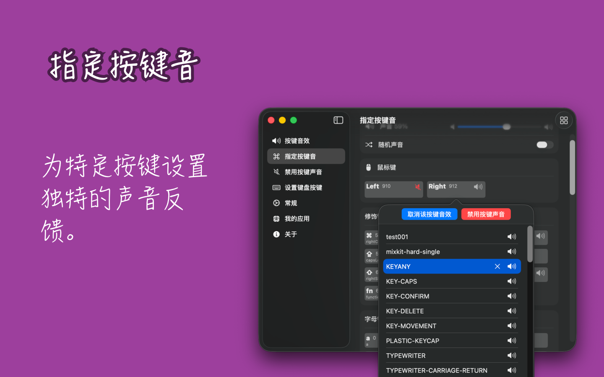

最低操作系统要求：macOS 14.0；通过 GitHub 下载以优先体验最新版本



KeyClicker 为用户带来真实的键盘打字声音体验，再现机械键盘与打字机的敲击感受，并支持在桌面上显示按下的快捷键，适用于会议、教学或视频教程制作等场合。
对于作家或打字机爱好者，KeyClicker 是理想的选择。许多作家发现，打字机的声音能帮助他们提高专注力和创作灵感。虽然实体打字机有其独特魅力，但它缺乏现代设备的便捷功能，例如高效的编辑和数字化操作。使用 KeyClicker，您既能享受打字机的经典声音，又能保留 macOS 强大的编辑和发布功能。
作为程序员，KeyClicker 也能为您带来极致的机械键盘打字体验，让每一次敲击都充满沉浸感，提升编程的专注度与乐趣！
如果您在设置按键声音后听到两个按键音，可能是因为系统默认的声音与自定义按键声音重叠。为了解决这个问题，您可以在 系统设置 -> 声音 中关闭 播放用户界面音效 和 音量调整时播放反馈音效 这两个选项，从而避免系统声音与自定义声音干扰。